面试官得瑟：你懂Codex的Harness架构吗？，我笑了
来源：微信公众号 归档日期：2026-09-11 抓取状态：成功 原文字符：22844｜配图：45 张
摘要速览
- 深度拆解 OpenAI Codex 的 Harness 架构设计。
- 解释模型如何通过 Harness 接管文件系统、执行命令并管理上下文。
- 分析 App Server、Session、Agent 循环及长期记忆的协同机制。
核心内容
文章从 Codex 源码出发，详细解析了 Harness 的五大核心职能：
- 上下文组装：如何将项目规则、代码片段和历史结果打包给模型。
- 工具执行：模型提出的动作（读/写文件、运行命令）如何由 Harness 路由并执行。
- 会话管理：如何维持多轮对话的状态，处理中断与恢复。
- 权限控制：审批机制、沙箱限制及并发处理。
- 长期记忆：如何生成、检索和更新跨任务的经验。
可执行启发
- 在构建自己的 Agent 框架时，参考 Harness 的分层设计，解耦模型逻辑与执行逻辑。
- 重视上下文管理，避免长任务中的信息丢失或幻觉。
- 实现任务持久化，确保 Agent 在意外中断后能恢复进度。
归属：[[02-输入/按主题/工具与技术/_index|工具与技术]]
我的想法
（待补充）
原文沉淀
目录
- ────
- 只有模型够吗？
- Harness 要负责什么？
- 为什么需要 App Server？
- 一项任务怎么流动？
- 为什么要多次请求模型？
- 模型输出怎么变成动作？
- 任务状态由谁保存？
- 为什么需要 StepContext？
- 等待和取消
- 失败怎么处理？
- 循环什么时候结束？
- 模型实际看到了什么？
- 项目规则怎么注入？
- 重复信息怎么更新？
- 长输出怎么处理？
- 调用与结果怎么配对？
- 上下文满了怎么办？
- 模型能看到哪些工具？
- 工具调用怎么路由？
- 审批和沙箱做什么？
- 长命令怎么交互？
- 工具如何并发和选环境？
- 三种记忆有什么区别？
- 会话怎么恢复？
- 历史怎么提炼？
- 为什么还要整理？
- 新任务怎么读取记忆？
- 记忆怎么更新？
- 扩展怎么接入主循环？
- Skills、MCP 和 Hooks 做什么？
- 子 Agent 怎么运行？
大家好，我是小林。
之前评论区提到过后续搞一波图解 codex 源码系列，没想到还挺多读者点赞的。
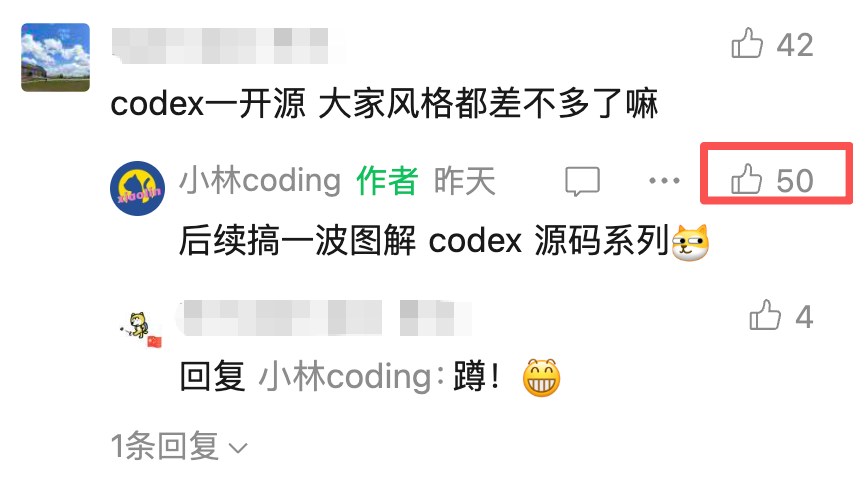
那么作为开篇的第一章，这次就来聊聊 codex 的 Harness 架构。
平时用 Codex，我们可能只会输入一句很简单的话：「帮我修改一下这个项目，完成后告诉我结果。」
然后屏幕上就开始不断出现新动作：先读项目规则，再搜索代码、打开文件、修改内容、运行命令。命令失败后，Codex 还会读报错，换一种方法接着做。
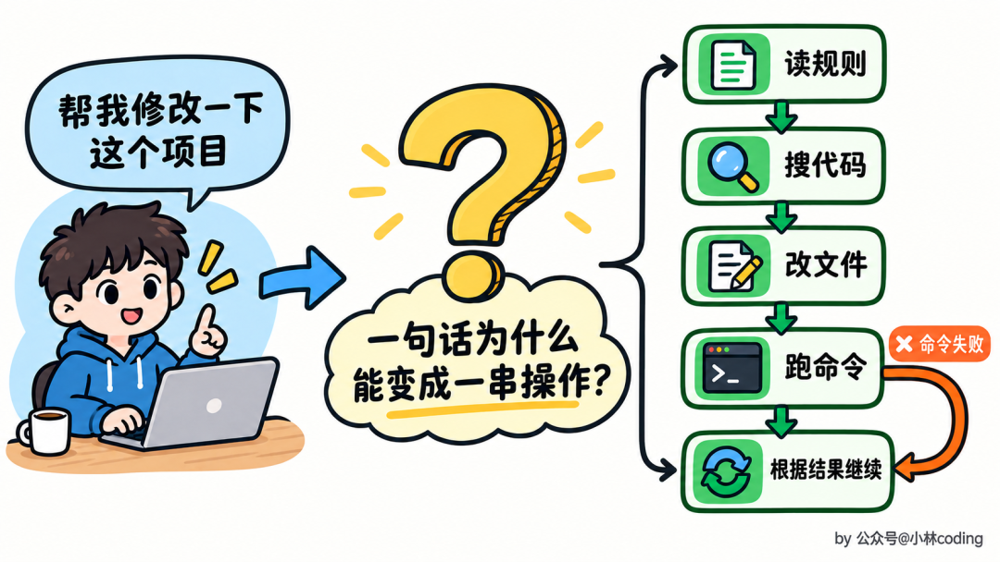
但仔细想一下，这里其实有一个挺奇怪的问题。大模型原本只会根据输入生成输出，既看不见你电脑里的代码，也不能真的启动一个进程。
为什么接进 Codex 之后，模型像突然长出了眼睛和手，还能连续工作十几步？
答案藏在模型外面的 Codex Harness 里。
Codex 的源码已经在 GitHub 开源了。为了弄清这套 Harness 到底是怎么工作的，我也把整个仓库拉了下来，从任务入口、会话管理、上下文组装，一路扒到了工具执行和长期记忆。
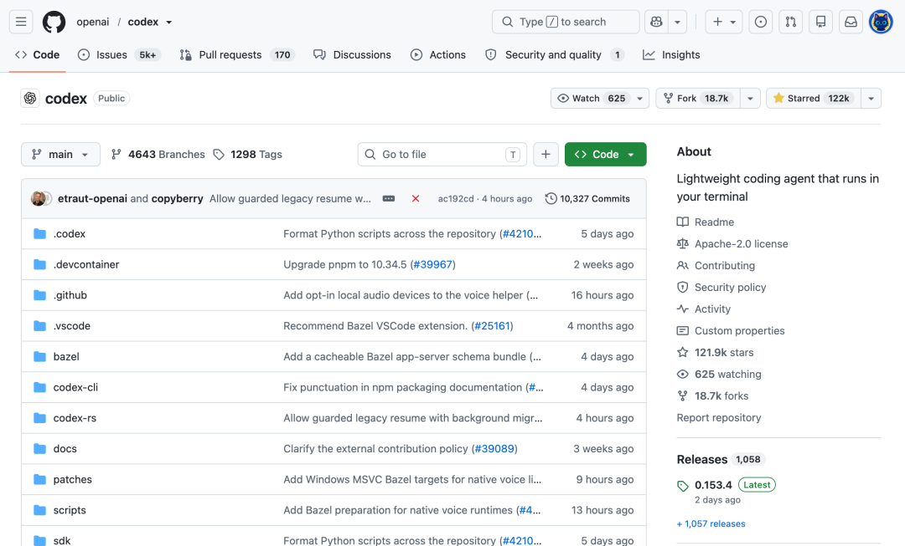
▲ https://github.com/openai/codex
所以今天这篇文章，我会沿着一次任务的执行过程，把 Codex Harness 的架构拆开来讲，重点回答下面这些问题：
• Codex 整体由哪些部分组成，Harness 在中间负责什么？
• 一句用户需求，怎样经过 App Server、Session，进入 Agent 主循环？
• 模型怎样调用工具，执行结果又怎样回到下一轮？
• 上下文怎样组装、更新和压缩，长任务为什么不会越跑越乱？
• 工具怎样注册、路由和执行，审批、沙箱、并发与长时间进程怎样配合？
• 会话状态怎样持久化，任务中断后怎样恢复？
• 长期记忆怎样生成、检索和更新，Skills、MCP、Hooks 与多 Agent 又接在哪里？
我们先看完整架构，再沿着主循环一层一层往里走。
────
01｜Codex 整体架构是怎样的？ ────
只有模型够吗？
我们先做一个最简单的假设：Codex 里面只有一个大模型。
用户说「帮我修改项目」，模型读到这句话，最多生成一段回答。哪怕回答里写出了正确代码，也只会停留在文本中。文件没有改变，命令没有运行，任务更不会因为一次回答失败，就自动发起下一次请求。
那还缺什么？
首先，要有人把项目规则、代码片段和之前的执行结果交给模型。其次，要有人接住模型提出的动作，真的去读文件、改文件、运行命令。最后，还得有人记住任务进行到哪里，判断什么时候继续，什么时候停下来。
承担这些工作的，就是 Harness。
所以理解 Codex 的第一步，不是先背模块名称，而是先分清三个角色：模型决定下一步做什么，Harness 负责组织上下文、安排工具执行、收集结果，再交给模型继续判断。执行环境，就是实际存放项目文件、运行命令的地方。
模型没有直接碰文件。模型提出动作，Harness 把动作交给工具。工具在执行环境里完成操作，再把结果交回 Harness。Harness 重新组织输入，又去请求模型。
模型给出下一步，Harness 把很多个下一步接成一项完整工作。 后面所有架构，都是在解决这句话里的具体问题。
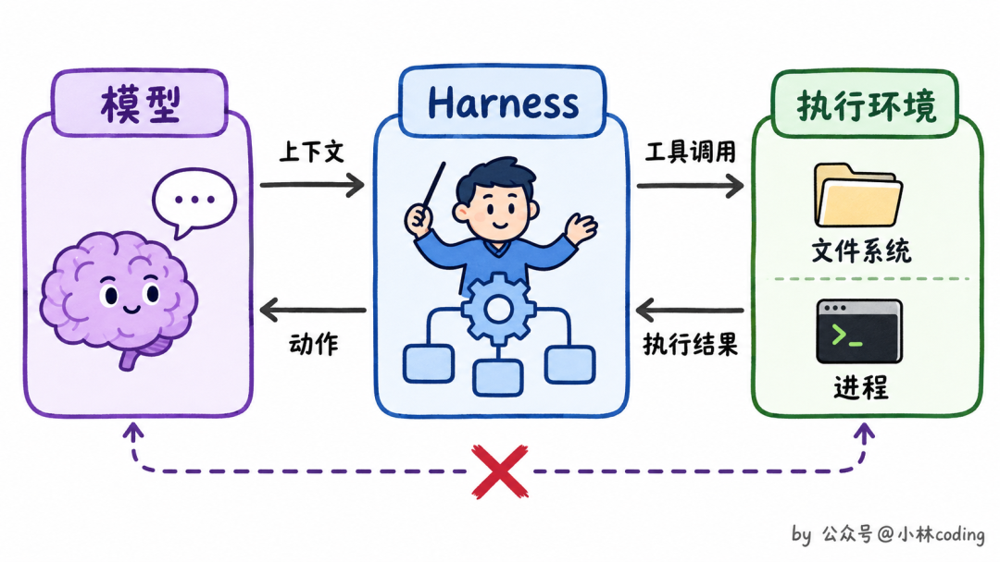
Harness 要负责什么？
现在我们已经知道 Harness 要组织任务。可「组织」两个字还是太抽象了。
把一次任务放慢来看，Harness 至少要回答五类问题。
• 用户从哪个界面发来输入，运行过程怎样返回界面？这需要接入与交互。
• 一项任务要请求模型多少次，下一步是否继续？这需要会话与编排。
• 这次到底给模型哪些规则、历史和工具结果？这需要上下文管理。
• 模型提出一个动作，谁来执行，权限够不够？这需要工具与执行系统。
• 任务关闭后怎样恢复，过去的经验怎样在以后被找到？这需要状态持久化和记忆。
于是，我们就能把 Codex Harness 画成一张完整地图。最上面是客户端和 App Server，中间是会话状态、Agent 循环与模型客户端。一侧负责上下文和记忆，另一侧负责工具、路由与执行。底部保存会话历史、元数据和记忆产物。
Harness 会向模型服务发送请求，拿回模型的回答或工具调用。用哪个模型、开放哪些工具、命令怎样运行，由配置决定。真正执行工具时，还要按照权限策略处理审批和沙箱限制。
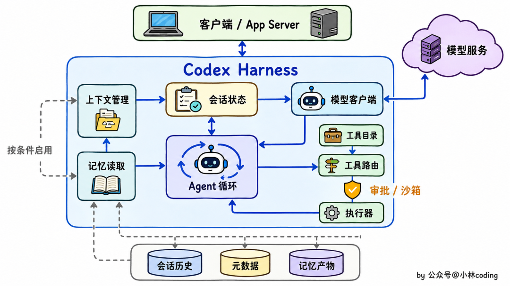
为什么需要 App Server？
地图有了，我们先从用户输入的入口往里走。
Codex 不只有一种界面。终端、IDE、桌面应用都可能提交任务，也都需要接收文字增量、工具进度、文件变更和审批请求。如果每个界面都自己实现一套 Agent 循环，同样的任务，在终端和桌面应用里就可能按不同流程执行。以后修一个问题，也得分别修改多套实现。
App Server 解决的正是接入问题。App Server 把界面发来的需求转交给 Agent 引擎，再把模型输出、工具进度和审批请求传回界面。
App Server 既可以作为服务供客户端连接，也可以在同一个进程里使用。无论采用哪种方式，职责都一样：把用户的要求传进去，把执行过程传回来。
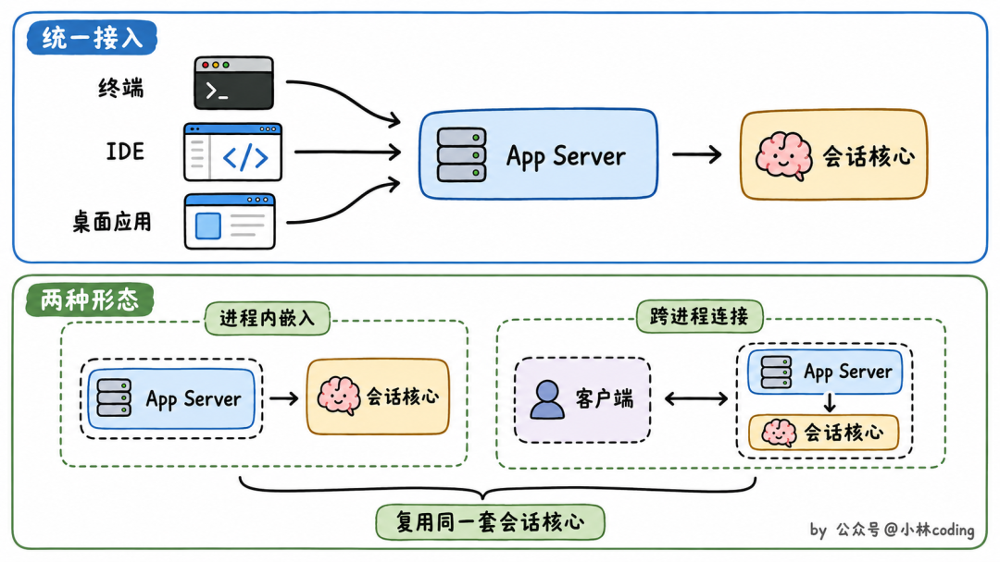
为什么一定要双向？因为 Agent 并不是普通接口那种「请求进去，结果出来」。
一次用户请求，可能连续产生几十个事件。客户端需要一边接收模型文字，一边显示工具状态。执行遇到审批时，服务还会反过来向客户端提问，等待用户允许或拒绝，然后再继续原来的工作。
所以 App Server 负责的是一段持续交互，而不是一次简单的问答。
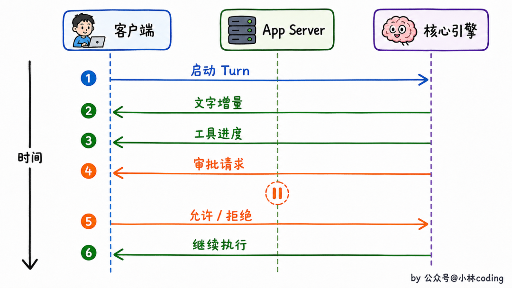
一项任务怎么流动？
到这里，我们可以让那句「帮我修改一下这个项目」第一次穿过总图。
输入先经过 App Server 进入会话。会话引擎准备这一轮工作，上下文系统把规则、环境和已有历史组织起来，再由模型客户端请求模型。
模型可能先提出搜索代码。工具系统接到调用，在执行环境中完成搜索，把结果写回历史。主循环发现任务还没结束，于是带着新结果再次请求模型。模型再提出读取文件、修改内容或者运行验证。
你会发现，一项任务不是从总图左边走到右边就结束了。真正的主线是一个闭环：准备上下文，请求模型，执行动作，得到反馈，再准备下一次上下文。这里先看数据会经过哪些组件，至于循环为什么继续、怎样结束，下一章再拆开。
底部的历史会持续记录过程。后台记忆在满足条件时处理过去的历史，为未来任务提供材料，不需要阻塞眼前这项任务。
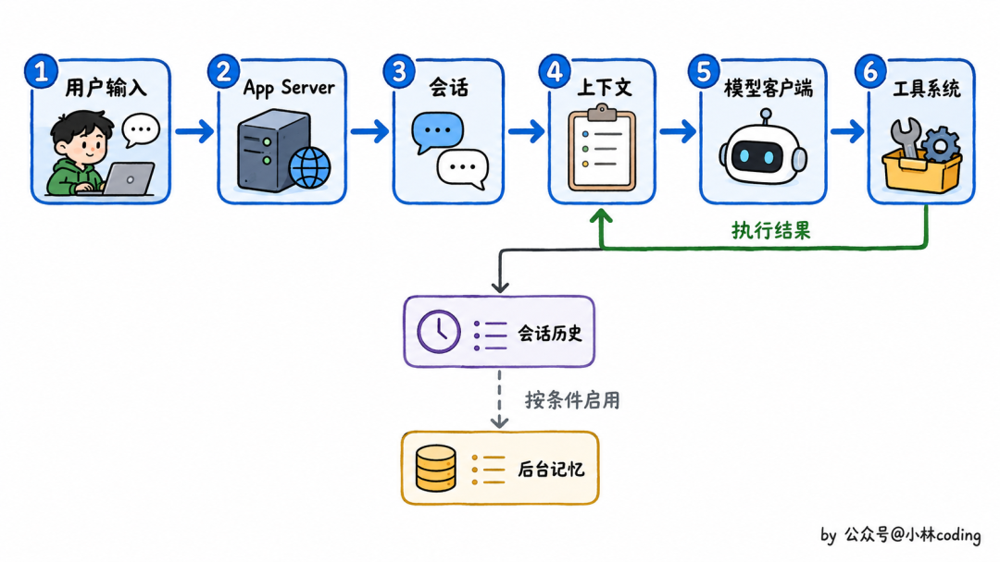
现在大地图已经建立了。接下来别急着跳去工具或记忆，我们就盯住中间这个闭环，看看一次 Agent 循环是怎样跑起来的。
────
02｜Agent 循环怎么运转？ ────
为什么要多次请求模型？
还是那句最简单的需求：「帮我修改一下这个项目。」
第一次请求模型时，模型连项目里有哪些文件都不知道，合理的动作可能只是先读规则，或者搜索相关代码。只有工具真的返回结果后，模型才获得了新的事实。
于是第二次请求和第一次已经不一样了。第一次是在决定从哪里开始，第二次是在根据刚读到的内容判断该改什么。修改完成后，验证命令又可能带回新的成功或失败信息，第三次、第四次请求继续建立在这些反馈上。
这就是 Agent 循环存在的原因：很多信息无法靠模型猜出来，只能先行动，再根据环境反馈决定下一步。
Harness 要做的事情也因此清楚了：每拿到一次真实反馈，就重新判断任务是否还需要下一步。只要模型仍在请求工具，或者还有新输入等待处理，循环就不能停在当前响应上。
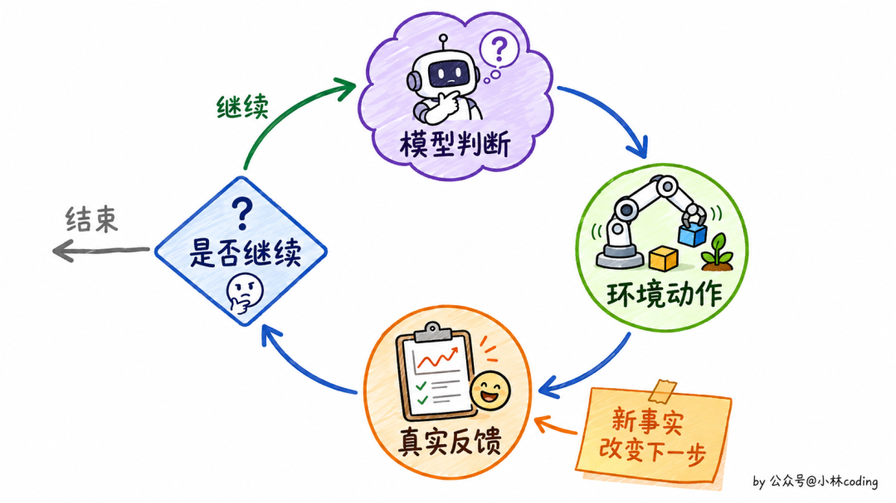
这里可以先形成一个最小理解：Agent 不是模型连续思考的神秘过程，而是模型判断与环境反馈不断交替。模型每次只基于当前输入给出输出，Harness 负责把前后几次请求接起来。
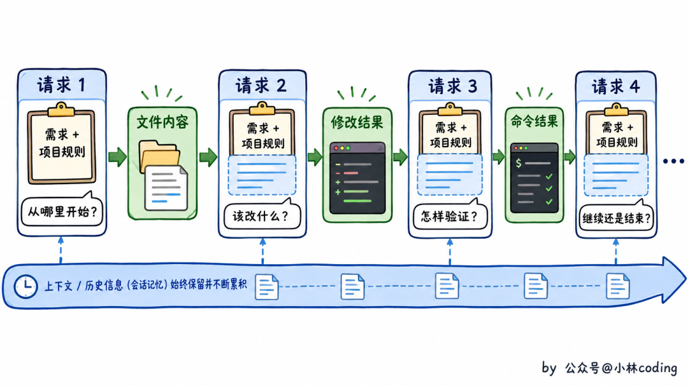
模型输出怎么变成动作？
好，我们现在停在一次模型请求上。
很多人脑中可能是这样的画面：Harness 发出请求，模型返回一大段完整答案，然后程序再分析答案。真实处理要细一些，因为模型返回的是流式事件。
文字增量到达时，Harness 可以交给界面展示。一个工具调用完整生成后，才会进入工具分发。响应完成事件到达时，Harness 更新这次请求的状态和用量，再由外层循环判断后面是否还有工作。
为什么要区分这些事件？
因为「模型正在输出一句解释」「模型已经提出一个完整动作」「这次响应已经结束」是三个不同的时刻。半截工具参数不能执行，一段文字也不应该被误当成命令。
连接和传输方式由模型客户端内部处理。对主循环来说，收到的始终是统一的文字增量、工具调用和完成事件。
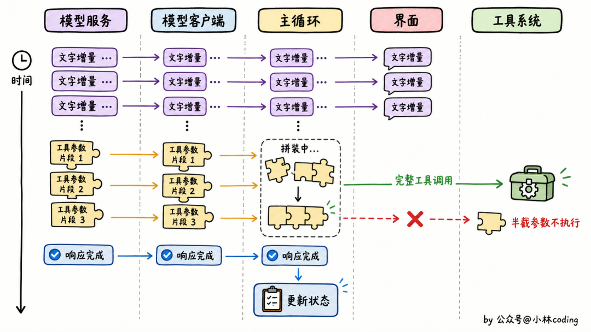
工具执行完成以后，结果还要带回原来的调用标识。假如模型一次提出两个动作，一个读取配置，一个运行命令，Harness 必须知道每段返回属于哪次调用。
下一次模型请求看到的是工具调用与结果之间的对应关系。只有关系没有断，模型才能判断刚才哪一步成功、哪一步失败。
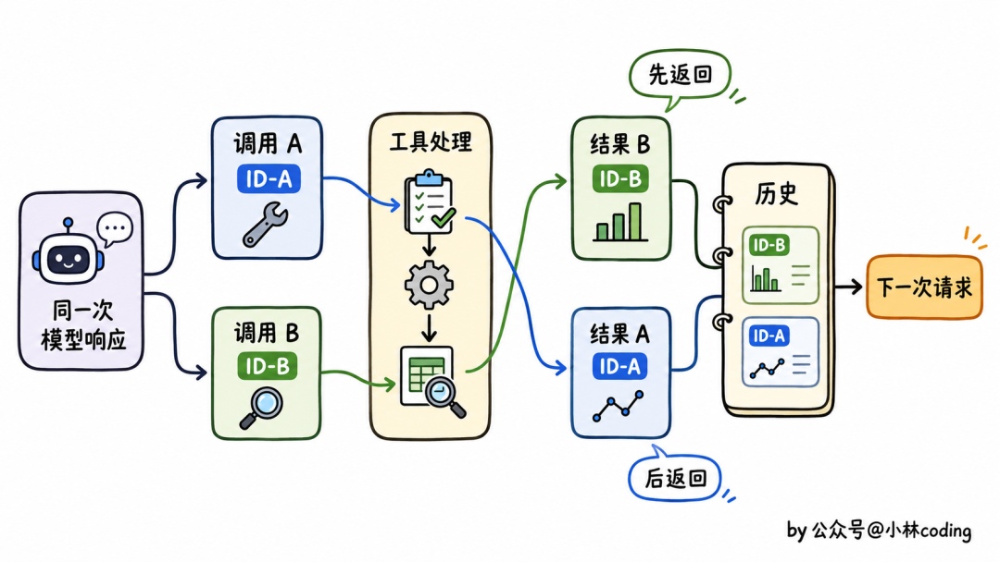
任务状态由谁保存？
到这一步，模型的一次响应已经结束，但用户的任务可能远远没有结束。
那正在等待的工具、用户刚补充的一句话、已经完成的动作，放在哪里？答案是会话状态，而不是模型自己记住。
你打开一个任务，先说「帮我修 Bug」，等 Codex 做完，再说「补上测试」。这两轮工作属于同一个 Thread，也就是同一段会话。
每次用户输入发起的一轮工作，叫 Turn。这一轮里的用户消息、模型回复、工具执行和审批记录，则是一个个 Item。
所以，一个 Turn 里可以请求模型很多次，不能把它理解成一次模型 API 调用。
Session 则负责在程序内部保存这段会话的历史、待处理输入，以及运行时需要的共享服务。当前正在执行的 Turn，还会记录哪些任务仍在运行，以及流程正在等待用户输入、审批还是外部响应。
这些名字不用一口气全背下来。先记层级就够了：Thread 装着多轮任务，Turn 装着这次任务产生的多个 Item。Session 则是让这段会话真正运行起来的内部状态容器。
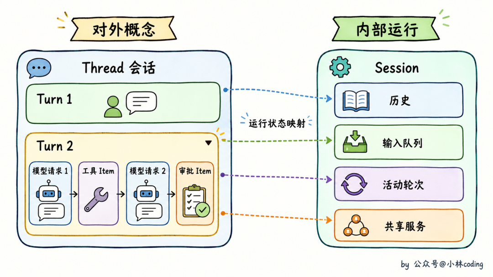
为什么需要 StepContext？
为什么不能等工具调用回来以后，再读取最新配置？
想象一个具体场景。模型请求发出去时，工具目录里还有工具 A，所以模型按照眼前的能力生成了对 A 的调用。可在结果返回前，配置刚好刷新，新目录里已经没有 A。如果 Harness 按新目录解释这次调用，模型明明使用了刚才展示给它的工具，最终却会收到「工具不存在」。
所以 Codex 会为每次模型请求捕获一份 StepContext，固定这一步使用的模型设置、环境视图、MCP 绑定、工具路由和项目规则。工具调用返回后，Harness 仍然沿用同一份请求上下文进行分发。
这样，模型是按哪份工具列表发起调用的，Harness 就按同一份列表处理，不会因为配置中途刷新，让刚才还可用的工具突然找不到。
不过，StepContext 固定的只是这次请求采用的配置、工具列表和项目规则。文件仍可能被用户或其他任务修改，外部服务也可能变化。StepContext 不会把整个文件系统和外部世界一起冻结。
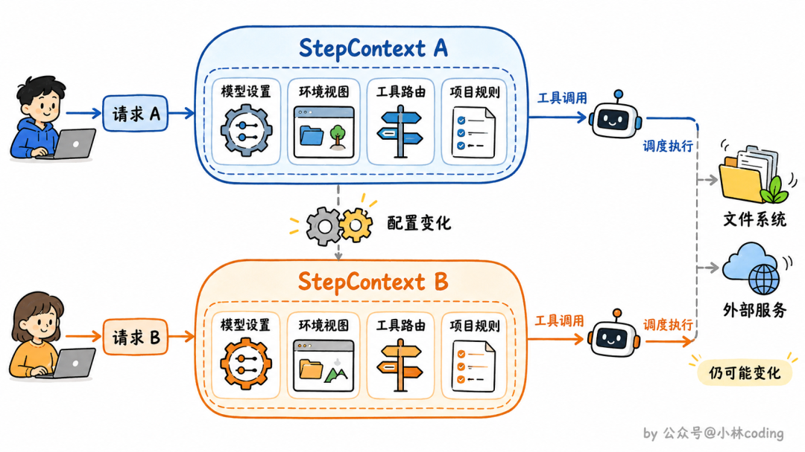
等待和取消
前面的闭环看起来很顺：模型给动作，工具给结果，然后继续。但真实任务一定会遇到停顿和错误。
先看等待。工具需要审批时，Harness 会记下哪个操作正在等用户确认，再把审批请求发到界面上。用户允许或拒绝后，Harness 将答复交给对应的操作，继续处理。模型向用户提问时，也需要记下正在等哪个问题的答案。
再看用户追加输入。假如 Codex 正在运行，你补了一句「修改范围只限当前模块」，这句话通常先进入输入队列。已经发出去的模型请求不会凭空多出新内容，主循环会在合适的边界取走这条输入，让后续请求看到。
取消又不同。Harness 会触发取消信号并收尾当前任务，但已经写入的文件不会自动恢复。仍在运行的进程或子 Agent，也有各自的生命周期，需要相应的控制逻辑处理。
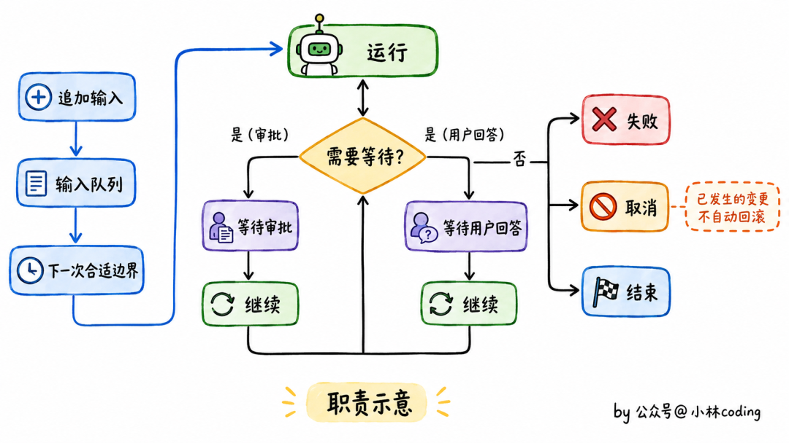
失败怎么处理？
错误也不能全塞进一个「重试」框。命令退出失败，可以作为工具结果交给模型分析。如果连接模型服务时中断，Harness 可能等一会儿再重连，或者改用另一种传输方式，具体取决于错误类型。遇到无法继续处理的错误，才会结束这一轮，并清理相关运行状态。
重新请求模型、重新执行工具、从历史恢复会话，是三件不同的事情。尤其当一个命令已经产生副作用时，模型连接重试不代表这个命令可以安全重跑。
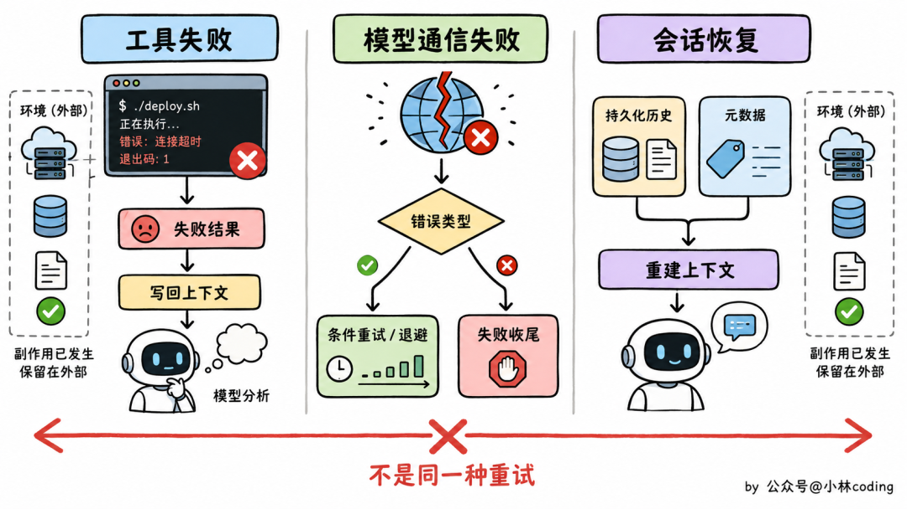
循环什么时候结束？
模型没有继续调用工具，任务也不一定立刻结束。主循环还要确认：有没有用户刚补充的要求，有没有尚未处理的错误，以及停止前的检查是否允许结束。如果用户追加了要求，或者停止前的钩子（Stop Hook）补入了需要继续处理的内容，Agent 就可能再执行一轮。
Codex 停下来，也不代表你的要求一定完成了。比如修一个 Bug，文件改完只能说明代码变了，还要看相关测试和验证结果，才能判断问题是否解决。
到这里，主循环已经完整了：从一次请求开始，通过工具获得新事实，处理等待与失败，再决定继续或结束。
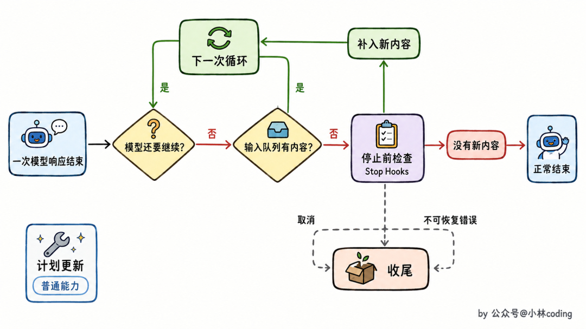
这一章讲的是轮次正在运行时，Harness 怎样保存状态并推动循环。会话关闭以后，哪些内容会落盘、重新打开时又能恢复到什么程度，留到第五章再回答。
但还有一个关键问题没有回答。第二次请求模型时，第一次的结果、项目规则和环境状态，是怎样变成新输入的？下一章，我们就沿着循环往前退半步，看看请求发出之前发生了什么。
────
03｜上下文怎么组织？ ────
模型实际看到了什么？
你在聊天框里只输入了一句话，但 Harness 发给模型的内容要多得多：既要说明你想做什么，也要告诉模型项目有哪些规则、前面做到了哪一步、现在能用哪些工具。
其中有规定 Codex 整体行为的基础指令，有说明当前任务和仓库约束的用户需求与项目规则，也有工作目录等环境信息。前几次模型请求和工具结果记录着任务进度，工具定义则告诉模型这一步能提出哪些动作。
如果长期记忆功能满足启用条件，一小段记忆导航也可能进入请求，帮助模型决定是否查找过去的经验。
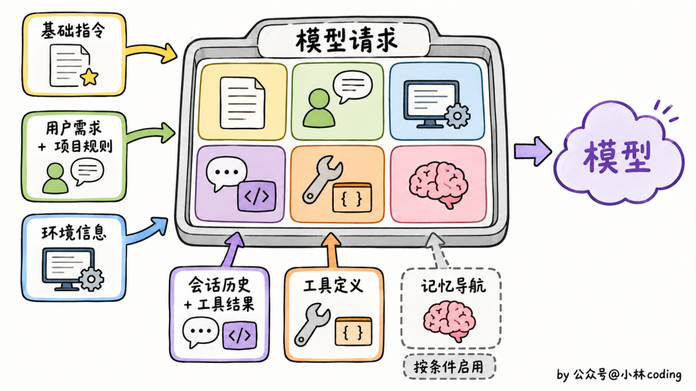
为什么工具定义也要放进去？因为模型不会凭空知道工具名和参数格式。只有 Harness 告知本次可见能力，模型才可能生成一条结构正确的调用。
上下文决定模型知道什么，工具定义决定模型此刻能要求 Harness 做什么。
项目规则怎么注入？
先看最容易理解的项目规则。
一个代码仓库可能在根目录写通用要求，在子目录再写更具体的约定。Codex 会围绕项目边界和当前工作目录查找规则文件，按层级组织找到的内容，并受到读取预算限制。
为什么要有层级？因为根目录的规则通常适用于整个项目，越接近当前目录的规则，往往越具体。模型需要同时知道全局要求和局部约束，才能在当前文件上工作。
但这不意味着仓库里所有说明都会被自动塞进模型。发现范围、候选文件、当前工作目录和读取预算都会影响最终内容。项目规则是经过 Harness 发现和组织后进入请求的，不是模型在每一步凭记忆猜出来的。
Skills 和内部扩展也能从各自入口补入说明或资源。来源虽然不同，最后都可能影响模型这一次怎样行动。
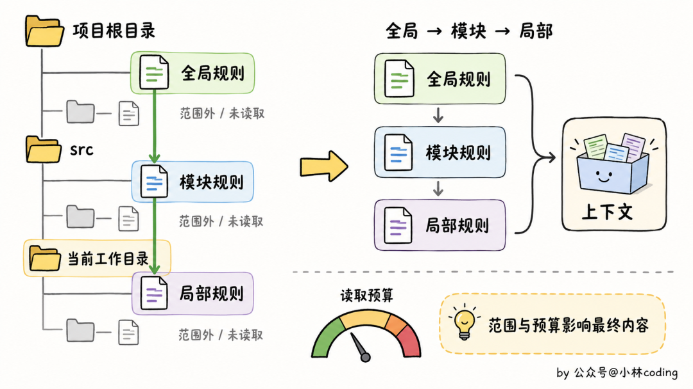
这里有一条边界需要停一下：写进上下文的规则，可以要求模型怎样做，却不能直接扩大执行权限。
项目文件里即使写了「允许访问某个目录」，实际工具能否访问，仍由 Harness 的权限策略和执行环境决定。文字指令解决行为选择，沙箱解决资源边界，两者属于架构中的不同位置。
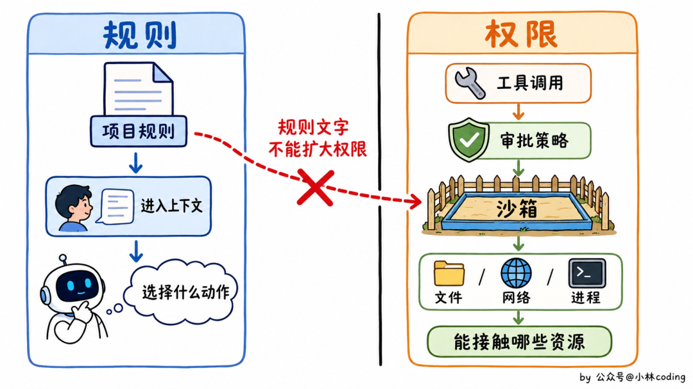
重复信息怎么更新？
如果每调用一次模型，就把相同的规则和环境说明再追加一遍，上下文很快会充满重复内容。
Codex 会记下已经向模型介绍过的规则和环境信息，这份记录就是上下文基线。第一次请求时，先提供必要的环境说明。以后工作目录、设置或其他环境信息发生变化，再补充变化的部分。
但这不代表下一次只发送变化内容。之前的对话和工具结果仍会随请求发给模型，只是不再重复追加相同的环境说明。
这和前面讲的 StepContext 正好接上。上下文系统组织这一步应该看到什么，StepContext 固定这次请求采用的设置、环境与工具视图。
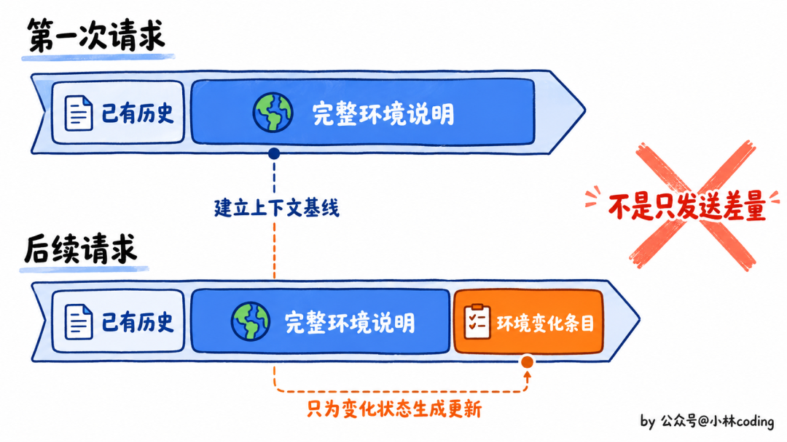
让前面的内容保持稳定，还有一个实际好处。连续请求拥有相同前缀时，模型服务才有机会复用已有前缀缓存。是否命中仍取决于服务与请求条件，但如果 Harness 每一步都重新排列前文，就很难保留这种机会。
所以维护上下文不只是控制长度。Context Manager 还要尽量保持不变信息的稳定，让新信息正常追加，让变化状态得到更新。
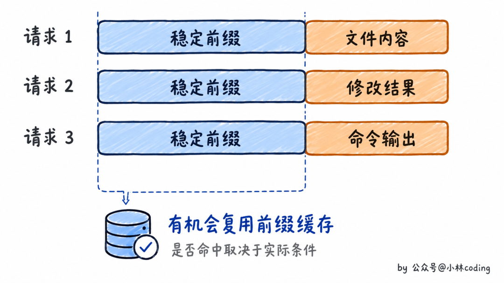
长输出怎么处理？
主循环继续运行，工具结果就会不断增加。文件内容可能很长，编译或测试日志更可能一次返回几万行。
如果全部保留，最先遇到的是容量问题。更麻烦的是，真正有用的报错也可能被大量重复日志淹没。
Codex 会在记录工具输出等环节应用限长策略，控制进入模型历史的内容规模。不同工具和输出类型，可以采用相应预算与保留方式。模型下一次看到的，可能是受限后的结果，而不是底层进程产生的全部原始输出。
那被省略的细节怎么办？如果现有信息不足，模型需要发起更精确的动作，例如读取指定文件范围、按关键词搜索，或者用范围更小的命令重新取得证据。
这里没有免费的午餐。限长换来了可控的上下文，也可能丢掉暂时看不出价值的细节。Harness 负责控制体积，模型通过后续工具调用补回真正需要的信息。
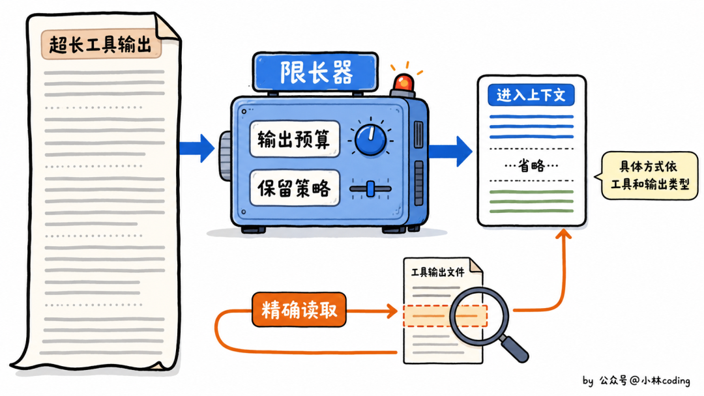
调用与结果怎么配对？
控制历史长度时，还有一个结构问题比文本长短更麻烦。
模型提出工具调用，工具随后返回结果，这两个条目通过调用标识配成一对。如果历史里只剩调用，没有结果，模型会不知道动作是否完成。如果只剩一段孤立结果，模型又不知道这段内容回答了什么。
因此，Codex 在发送历史前还要做规范化。缺失结果的调用需要补出中止等状态，孤立结果需要按协议处理，不支持的输入类型也要根据当前模型能力调整。
这里补出的状态，是为了告诉模型调用没有正常完成，并不是伪造一个成功结果。
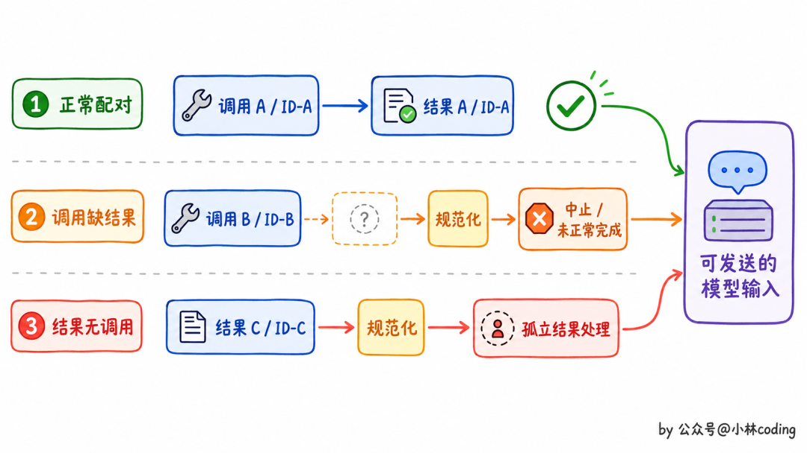
到这一步，我们已经看到 Context Manager 的核心工作：不只追加消息，还要维护模型能理解的历史结构。
一旦理解这一点，就能解释很多表面现象。Codex 有时重新读一段文件，不一定是模型完全忘了，也可能是旧输出被限长，或者压缩后需要重新取得精确证据。
上下文满了怎么办？
单次输出做了限长，任务足够长时，历史仍然会持续增长。规则、用户输入、模型消息和工具结果加在一起，最终会接近模型上下文窗口。
Codex 会跟踪使用量，并在轮次开始前或运行过程中，根据阈值与继续条件触发压缩。具体使用哪种压缩能力，还会受模型服务和配置影响。
其中，总结式压缩可以理解成写一份交接说明：目标是什么，哪些地方已经改完，确认了哪些事实，试过哪些失败的方法，接下来还要做什么。
下一次请求模型时，靠这些信息接着往下做，就不必再带上之前每一步的完整输出。
至于每次搜索的完整输出、已经被替代的猜测，就可能不再留在当前窗口。
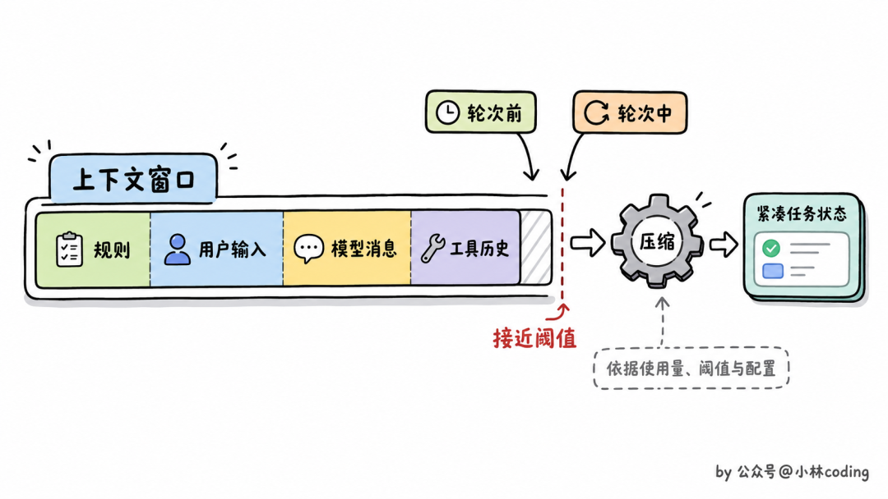
压缩之后，Harness 还要把必要的初始上下文放回合适位置。原因很简单：仅有一段任务摘要，未必包含当前项目规则、工作环境和模型需要遵循的全部要求。
轮次前压缩和轮次中压缩，在重新注入上下文的位置上还有不同安排，目的都是让后续请求拿到必要规则与当前任务。
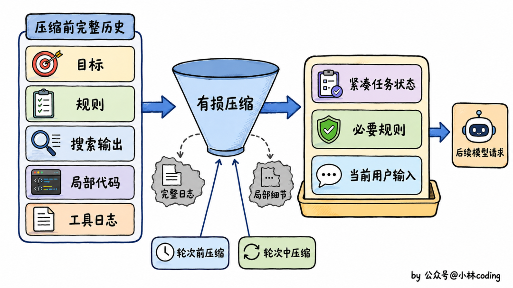
压缩最容易被高估的地方，是被想成无损存档。事实并非如此。
摘要保住了主线，也可能丢掉某段完整日志和局部代码细节。持久化历史里也许仍然保存过更多内容，但「Harness 保存过什么」和「下次模型请求能看到什么」是两回事。
所以必须把三个范围分清：当前模型窗口，Harness 维护的会话历史，以及后面才会讲的长期记忆。上下文压缩服务于眼前任务继续运行，不会自动把全部细节变成跨任务知识。
现在，模型输入已经准备好了。问题也顺着出现了：这份输入里包含工具定义，可 Codex 的工具越来越多，Harness 到底选择哪些给模型，又怎样把模型调用落到真实执行？
────
04｜工具调用怎么执行？ ────
模型能看到哪些工具？
我们先站在模型请求的角度看工具。
模型要使用工具，必须先看到名称、用途和参数结构。但如果 Harness 连接了大量内部工具、通过 MCP 接入的外部服务工具和扩展能力，把所有定义都塞进每次请求，会占用上下文，也会增加模型选择负担。
每次请求模型前，Codex 都要安排好工具怎么用：哪些工具直接展示名称、用途和参数，哪些等需要时再查找，以及模型发起调用后交给谁处理。这些安排合起来，就是本次工具计划。具体安排会结合当前配置、模型能力、运行环境，以及已经接入的 MCP 和内部扩展。
这里一定要区分三件事：系统里存在什么工具，这次请求向模型展示什么，以及 Harness 最终能调用哪个执行器。三者有关联，却不是一个简单的完整列表。
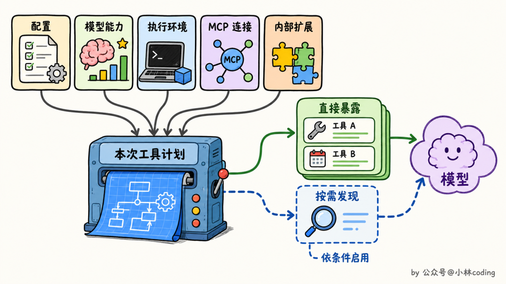
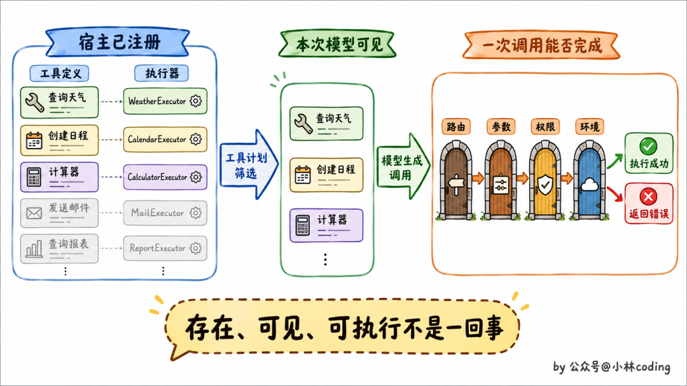
这也解释了为什么同一个 Codex，在不同项目、模型或权限配置下，能用的工具可能不同。不是模型临时忘了一个工具，而是本次 StepContext 固定的工具计划可能不同。
工具调用怎么路由？
现在假设模型已经生成一条完整调用。
模型输出的是结构化请求，里面包含工具名称和参数。Tool Router 先解析这份请求，再从本次工具计划里找到对应处理器。如果工具不存在，或者参数不合法，就返回相应错误，不能把模型生成的任意内容直接拿去执行。
找到处理器后，Harness 把调用参数、会话信息和 StepContext 一起交给处理器。动作完成后，处理器再把结果封装为带调用标识的工具输出。
随后结果走向两个地方：事件通道把进展展示给客户端，Context Manager 把结果记入历史，供下一次模型请求使用。
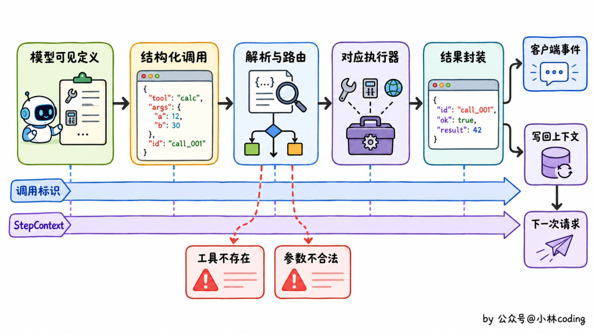
审批和沙箱做什么？
审批和沙箱负责控制动作怎样改变环境。读某个目录、修改文件、访问网络、启动进程，风险和权限要求并不一样。
对于执行类工具，Harness 会先走一段公共流程：根据当前策略判断是否需要审批，再选择合适的沙箱方式运行。审批回答「这个动作要不要额外获得许可」，沙箱限制「进程能够接触哪些资源」。
两者不能混为一谈。用户批准某个动作，不代表进程自动获得无限资源。沙箱里的执行失败，也不代表系统会直接提升权限重跑。
只有策略允许时，执行链路才可能请求许可或调整执行方式。其他类型的工具，也会根据自己的边界处理权限和失败。
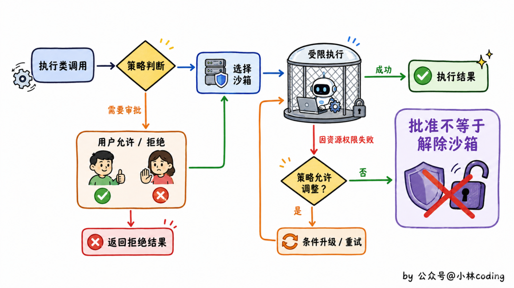
长命令怎么交互？
短命令可以一次等待结束，可编译、测试或开发服务可能持续很久。要是一次工具调用必须等到进程退出，Agent 就无法在运行中观察新输出，也很难与交互式进程继续通信。
Unified Exec 把「一次工具请求」和「一个进程的完整生命周期」分开处理，负责启动、跟踪进程，收集输出，并处理继续等待、写入输入和取消等操作。
第一次调用可以先返回当前输出和一个进程标识，底层进程继续运行。后续调用再用标识读取新输出，或者发送输入，直到最终取得退出状态。
因此，工具调用返回了一段日志，只能说明 Harness 当前拿到了这些内容，不能直接推断进程已经结束。
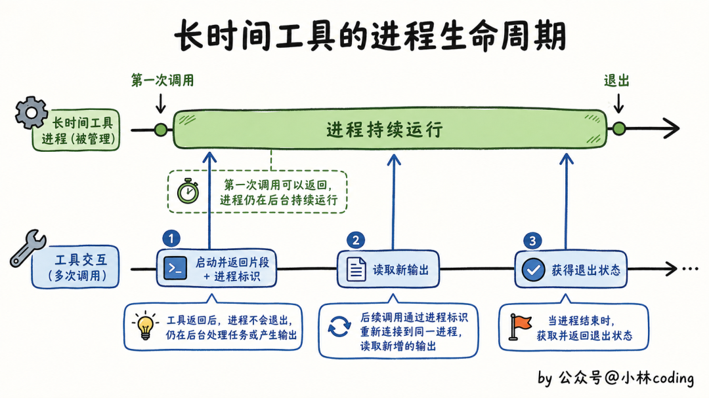
工具如何并发和选环境？
模型一次可能提出多个动作，Harness 也要判断这些动作能否并行。
可以把这里想成一道门。允许并行的工具拿的是共享通行证，可以一起进去。需要单独运行的工具拿到专用通行证后，其他调用要在门外等它完成。
这道门控制的是工具分发顺序，不是给整个文件系统上锁。具体拿哪种通行证，由工具注册时声明的能力决定。工具进入以后如果还会修改共享资源，仍然要处理自己的数据一致性。
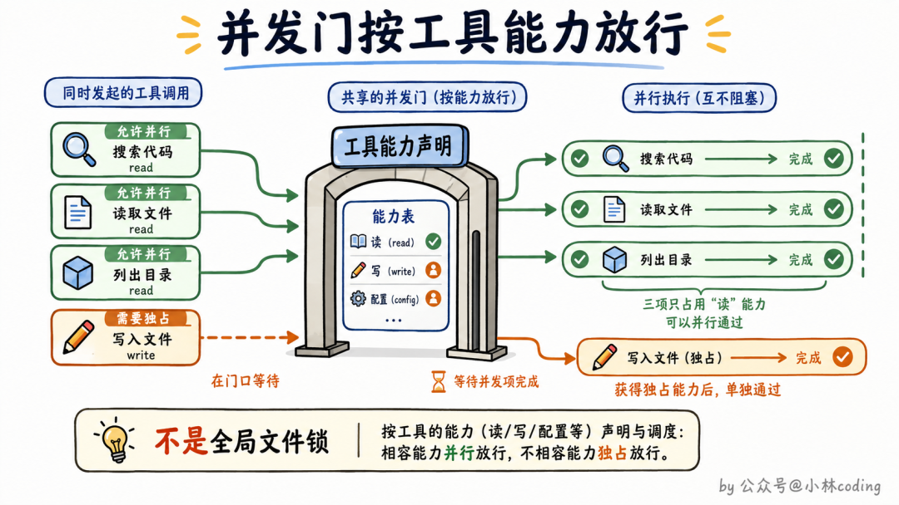
找到负责执行的工具以后，还要确定它在哪里运行。启动进程、读写文件这类操作，可以交给 Exec Server，在对应的本地或远程环境中执行。MCP 工具会请求各自连接的外部服务。内部控制工具则直接在运行 Harness 的 Codex 进程里处理。
这里别被两个相近的名字绕进去。App Server 连接客户端和 Agent 运行核心，负责传递用户请求与执行事件。Exec Server 连接工具和执行环境，负责相应的进程与文件操作。两者做的是不同的事情。
所以工具系统不是一个巨大的 Shell。不同类型的工具会走不同的处理程序、权限策略和执行环境，最后再把结果送回同一个 Agent 循环。
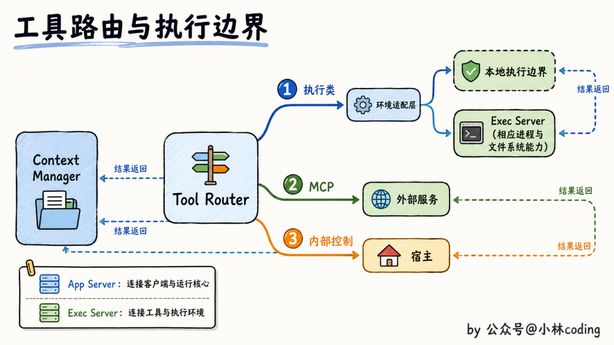
讲到这里，一项任务已经能完整跑起来了：模型看到上下文，提出动作，工具受控执行，结果回来后循环继续。
可一旦关闭当前任务，模型窗口里的内容还在吗？下次新开任务时，Codex 又凭什么记得过去发生过什么？这就进入了最容易混淆的一组概念：上下文、历史和长期记忆。
────
05｜长期记忆怎么形成？ ────
三种记忆有什么区别？
先想三个时间点。
第一个时间点，Agent 正在处理当前任务，下一次模型请求需要知道刚才读了什么、改了什么。这里依赖的是当前上下文。
第二个时间点，你关闭界面，后来重新打开原来的会话，希望继续之前的工作。这里依赖的是持久化历史和状态重建。
第三个时间点，你创建了一个全新的会话，希望过去积累的项目经验仍然能派上用场。这里才需要长期记忆的提炼与读取。
如果把三者都叫作「记忆」，就很容易得出错误结论：以为压缩历史是在写长期记忆，以为会话保存后，新会话就会自动读到全部旧聊天。
更准确的理解是：上下文服务下一次模型请求，持久化历史服务原会话恢复，长期记忆尝试把跨任务仍有价值的信息带进新任务。
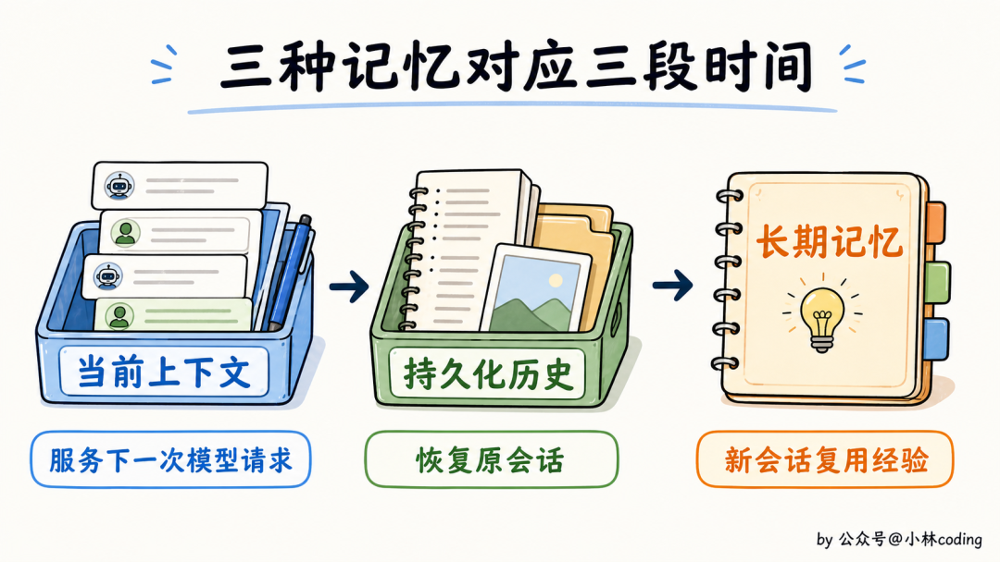
会话怎么恢复？
一项任务运行时，会话过程会持续写入历史。当前本地实现以 JSONL 保存事件历史，在状态数据库可用时，再用 SQLite 保存便于查询的元数据。
重新打开原会话，Harness 会先从记录中还原已经发生过的用户消息、模型回复和工具结果，再恢复上下文基线与窗口用量等信息。恢复不只是把聊天文字重新显示出来，还要让 Context Manager 知道接下来从哪里继续组织输入。
但恢复也有明确边界。某些等待中的审批、交互对象或正在运行的进程，只存在于当时的进程内。历史保存了什么，恢复过程才能重建什么。已经发生的文件修改，也不会靠重放聊天自动撤销或再执行一次。
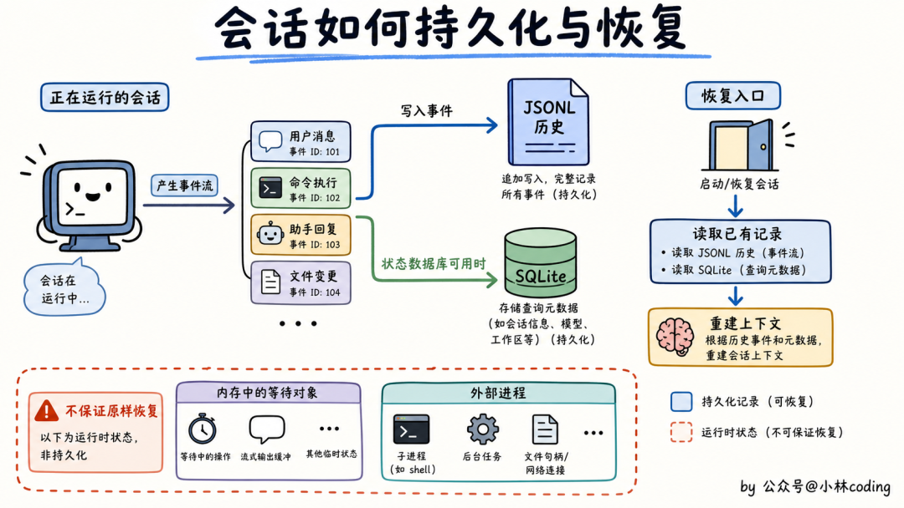
到这里，原会话可以接着看、接着组织输入了。可如果是一个完全不同的新会话，直接把几十次旧任务全部塞进去，显然又回到了上下文爆满的问题。
所以长期记忆不能只是「保存更多」，还得先回答一个更难的问题：过去哪些内容值得留下？
历史怎么提炼？
在看写入过程之前，先问一个更实际的问题：记忆任务什么时候启动？
当前 App Server 会在带输入的新轮次成功启动、运行环境准备好后，尝试调度后台记忆任务。真正启动前，还要确认长期记忆功能已经开启、当前会话不是临时会话或子 Agent 会话、状态数据库可用，而且账号剩余调用量高于系统设置的阈值。任一条件不满足，这次后台记忆任务就直接跳过。
所以长期记忆不是每轮结束立即保存的固定步骤，也不能假定每个安装都默认启用。前台任务可以继续执行，后台流程在条件满足时处理符合要求的旧历史。刚完成的内容，也不保证立刻进入下一次请求。
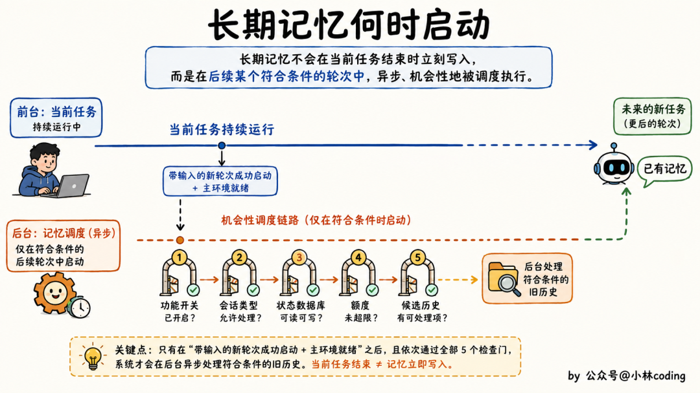
通过这些条件以后，记忆写入还要分成两个阶段。我们先看第一阶段，每次只处理一段历史任务。
后台流程不会拿到一条历史就立刻提炼，而是先按会话来源、时间、空闲状态、记忆配置和数量限制筛选候选，再通过任务租约抢占处理资格。可以把租约理解成一把有时间限制的锁：一个后台任务拿到以后，其他任务暂时不能处理同一份材料。即使任务中途异常退出，锁到期后也会自动释放，材料仍能被后续任务接手。
候选选中后，模型从这次任务中提炼结构化的原始记忆和任务摘要。目标是留下可复用偏好、有效步骤、失败教训等信息。如果这次任务没有值得长期保留的内容，也允许没有产出。
比如一个项目长期固定的验证命令，可能对未来任务仍有用。一次偶然产生的完整临时日志，就未必需要保存。这里说的是提炼目标，不是程序已经保证每条记忆都正确。模型仍可能遗漏，也可能概括得不够准确。
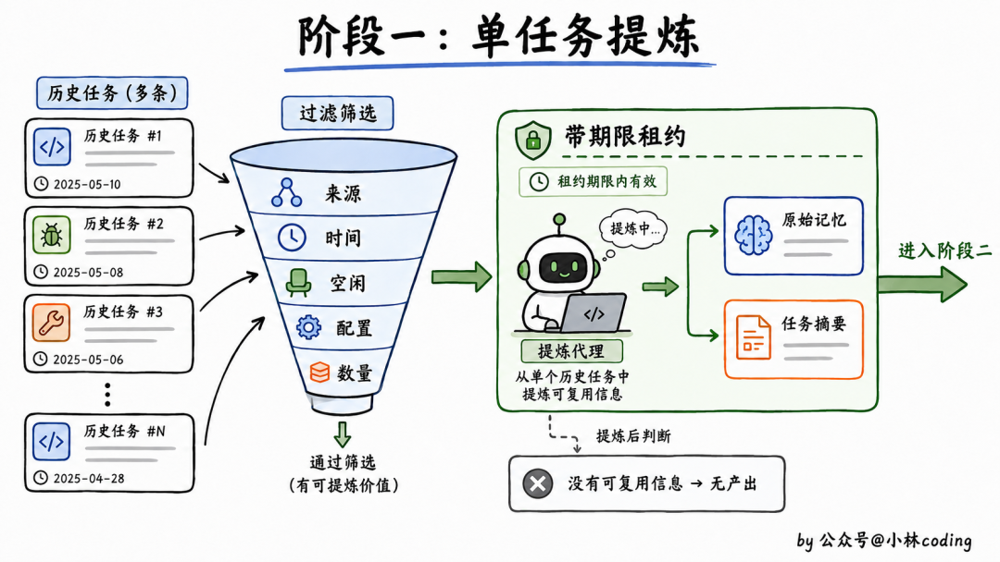
为什么还要整理？
因为单任务记忆只是材料，还不是一份容易使用的知识。
不同任务可能重复记录同一条命令，也可能保留已经变化的项目约定。如果把这些材料按时间不断追加，模型下次会读到大量重复甚至互相冲突的内容。
于是第二阶段要做跨任务整理。整理流程先取得全局租约，也就是给整个整理过程加锁，再选择第一阶段的材料，同步到记忆工作区，并比较内容是否发生变化。没有变化且现有产物通过检查，就可以跳过本次整理。
确实需要更新时，Harness 会启动一个专门的整理 Agent，把经验整理成几类文件：导航摘要告诉模型有哪些经验可查，详细记忆说明具体内容，任务摘要帮助模型追溯当时做了什么，可复用步骤则记录以后遇到同类任务可以怎么做。
这里锁住的不是某一段历史，而是整份共享记忆，因此同一时间只允许一个整理 Agent 改写。整理 Agent 本身还是临时内部任务，会关闭再次生成和读取记忆、递归协作等能力，避免整理过程再次触发自己。
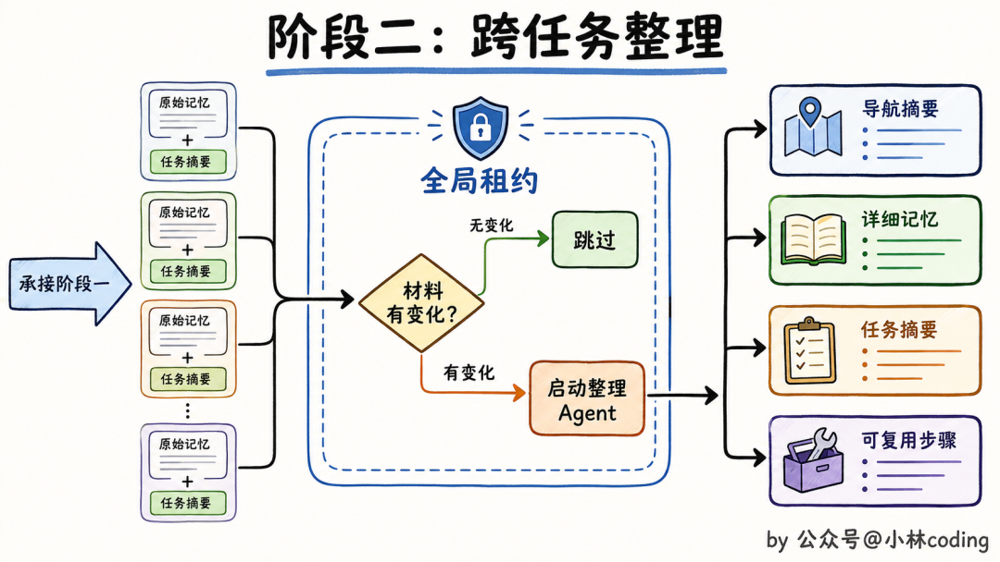
新任务怎么读取记忆？
读取分两步：先给导航，再按需展开。把全部记忆塞进去，只会让新任务的上下文越来越难控制。
当记忆读取功能启用，而且已经存在非空摘要时，扩展会把有限长度的记忆导航和使用说明注入开发者指令。
模型先看到「过去大概有哪些经验」，判断是否与当前任务相关。需要细节时，再通过专用工具搜索详细记忆，必要时继续读取任务摘要和可复用步骤。
当前本地搜索主要按照文字匹配，找到以后只返回命中位置附近的一小段内容。这样不用把整份记忆都读进来，但如果两段话意思相近、用词却不同，就可能搜不到。
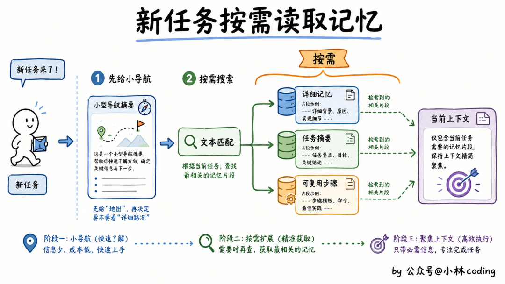
只不过，过去的经验仍然是线索。项目代码和环境可能已经变化，模型必须回到当前文件与工具结果上验证，不能把长期记忆当成永远正确的事实库。
记忆怎么更新？
长期记忆也会变化。系统可以根据记忆引用等信号记录使用情况，再结合时间窗口和数量上限选择后续整理材料。长期未使用的原始材料可能被清理，但已经汇总的内容还要经过后续整理才能反映变化。
使用次数也不能证明一条记忆是真的，只能说明这份材料被引用过，并不构成自动事实校验机制。
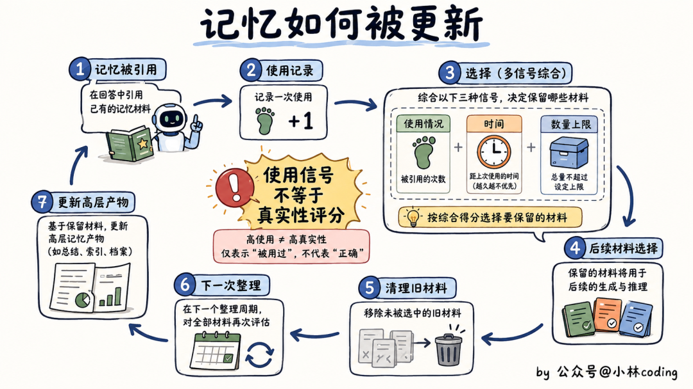
到这里，三种状态终于分开了：上下文负责眼前这次请求，历史负责原会话的续接，长期记忆负责跨任务的信息复用。
但你可能还会问，记忆为什么能同时把说明注入上下文，又提供搜索工具？Skills、MCP 和多 Agent 又是从哪里接进来的？最后一章，我们把这些扩展入口放回总图。
────
06｜扩展能力怎么接入？ ────
扩展怎么接入主循环？
如果每增加一项能力，都去改主循环中的大量代码，Harness 很快就会变得难以维护。Codex 内部提供了扩展注册机制，让每个扩展先登记自己会增加什么，以及要在哪些时机运行。
有的扩展会往模型输入里补充说明，有的会增加工具，还有的会在会话启动、轮次结束等时机执行处理。Harness 会先登记这些扩展，等到准备模型输入、组装工具列表，或者运行到对应时机时，再调用相应的扩展。
第五章的记忆读取就是一个例子。准备请求时，记忆扩展可以补入一小段记忆导航。模型需要查看详情时，记忆扩展又能提供搜索和读取记忆的工具。
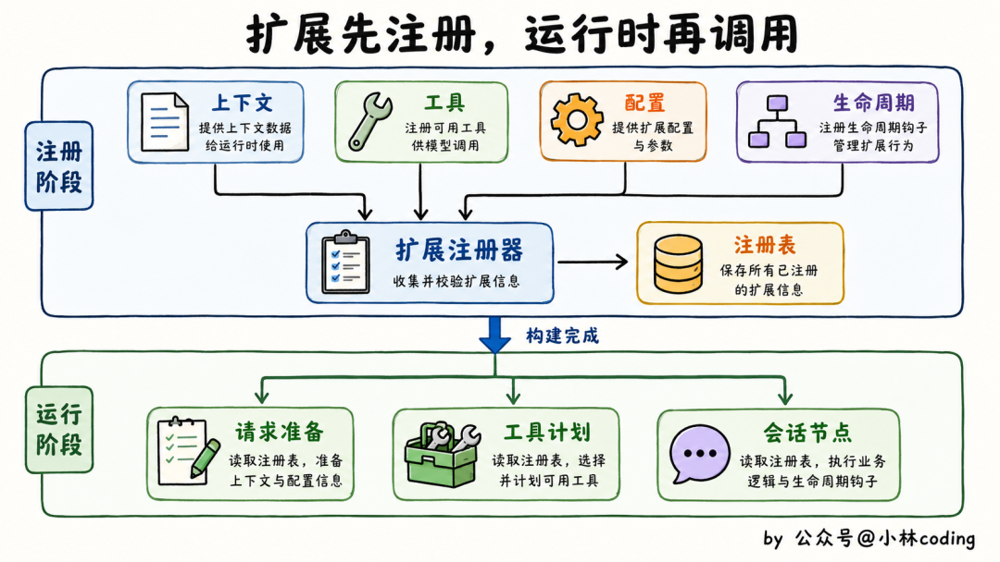
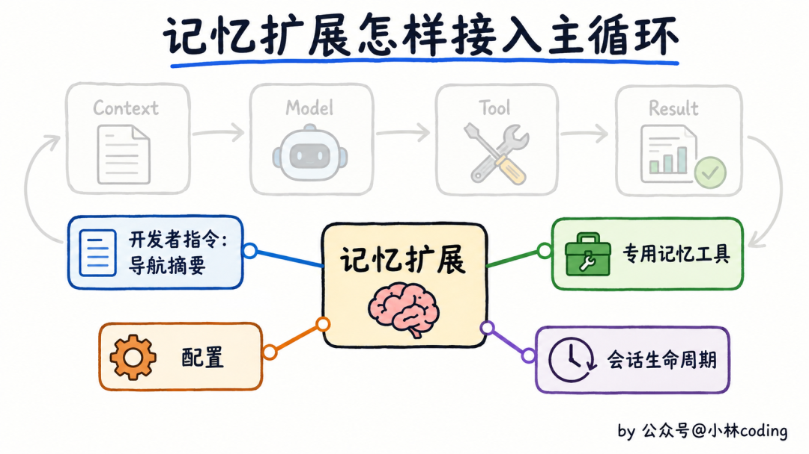
这里讲的是源码内部架构接口。内部扩展机制解释了核心运行时怎样组织扩展点，不代表所有面向用户的插件、MCP 服务和 Skills 都遵循同一个公开接口。
Skills、MCP 和 Hooks 做什么？
Skills 告诉模型某类任务应该怎么做，并提供需要的说明和资源。
MCP 把外部服务的工具接进来，让模型可以请求 Harness 调用。
Hooks 让程序在指定时机介入，比如收到用户输入时、工具执行前后，或者任务准备停止时。
一个提供做事方法，一个接入工具，一个在特定时机执行处理。
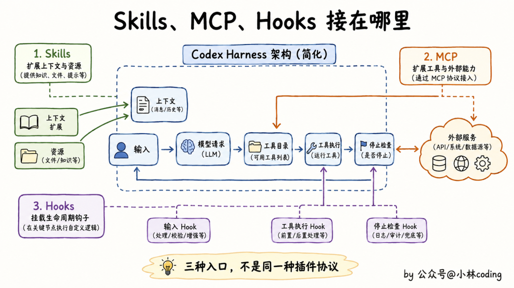
子 Agent 怎么运行？
子 Agent 仍然沿用同一套运行架构，也需要会话、上下文、模型循环和工具执行。多 Agent 机制复用这些核心组件，再增加父子关系、消息传递和并发控制。
父 Agent 可以把一部分调查任务交给子 Agent，子任务按配置继承相应上下文，独立运行后再把结果传回。父任务拿到新信息，继续自己的 Agent 循环。
独立会话意味着运行状态分开，却不等于文件环境一定隔离。如果父子 Agent 指向同一个工作目录，多个 Agent 仍可能看到或修改相同文件。真正需要隔离时，还要配合独立工作目录或相应环境策略。
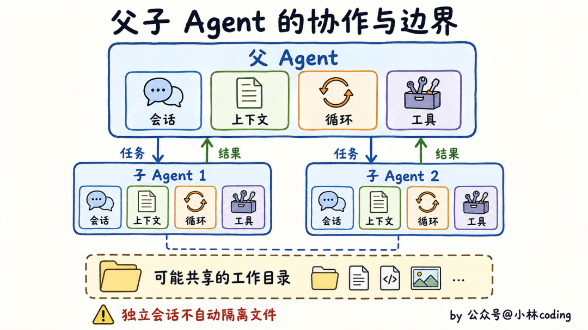
现在再回头看扩展，你会发现这些能力没有改变 Agent 的基本原理。无论加上 Skill、MCP 还是子 Agent，核心仍然是准备输入、请求模型、执行动作、接收反馈，再决定下一步。
────
最后 ────
恭喜你看到这里，你已经成功解锁了这道面试题。
如果面试官问你：「Codex 的架构是怎样的？」
你可以这样回答：
「Codex 的核心是在大模型外面加了一套 Harness，模型负责判断下一步，Harness 负责把判断变成真实行动。
整体上，Codex 可以分为客户端接入、会话编排、上下文管理、工具执行、状态与记忆五个部分。
用户发起任务后，Harness 会在一个 Turn 里反复「组织上下文、请求模型、调用工具、写回结果」，中途需要审批或用户补充信息时先等待，收到答复后再继续。
其中 Context Manager 把规则、历史和工具结果整理给模型，Tool Router 找到对应的工具处理器，再由执行流程按照权限策略处理审批、沙箱和实际操作。
Session 还会保存任务状态、压缩上下文和恢复会话，长期记忆则负责跨任务复用经验，所以整套架构的主线就是：
模型决定下一步，Harness 让这一步安全执行，再把结果交给模型继续判断。」
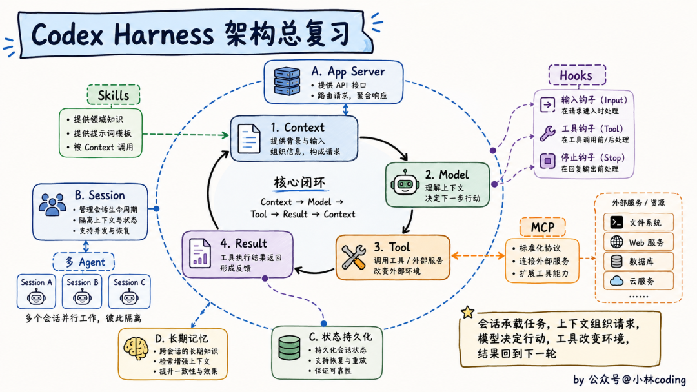
这就是 Codex Harness 最核心的工作原理：维护一个不断获得环境反馈的任务循环，让上下文、状态、权限、执行和记忆在正确的位置发挥作用。
今天分享就到这。
后续会持续更新《图解Codex 源码》系列，敬请期待哈！
归属：[[02-输入/按主题/工具与技术/_index|工具与技术]]